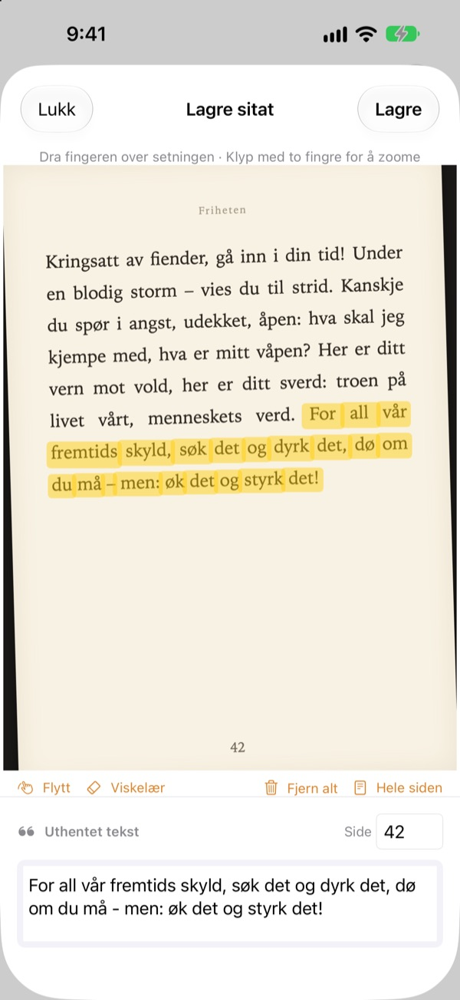
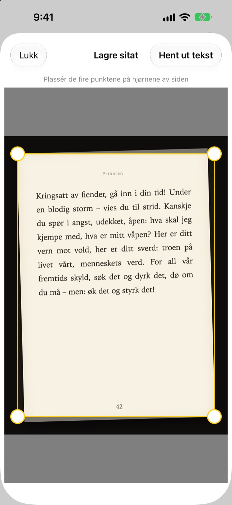
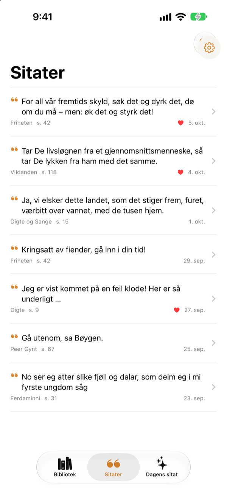
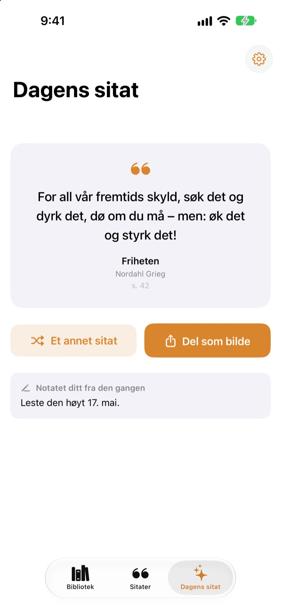

Strek under i boka
uten penn
Ta bilde av siden, dra fingeren over setningen du liker, så lagres bare den som tekst. Bok og sidetall blir med.
Alle funksjoner er gratis, uten reklame.

Prøv å dra
Dra fingeren eller musen over en hvilken som helst setning på siden nedenfor. Bare ordene du drar over, havner på kortet.
Hvor blir det av de gode setningene?
Det er en bibliotekbok, så du kan ikke streke i den. Et bilde av siden forsvinner blant tusenvis av andre i kamerarullen. Skriver du setningen inn i en notatapp, blir tittel og sidetall sjelden med. Bookmark Shot tar vare på setningen, boka og siden med to bevegelser: ta bilde og dra.
Skjevt bilde, rett side
Når du har tatt bilde av siden, plasserer du de fire hjørnene, og selv et skjevt bilde rettes ut som et ark. Jo skarpere bokstaver, jo bedre gjenkjenning.
Bilder som allerede ligger i bildebiblioteket, kan også brukes.

Alle sitatene på ett sted
Bøkene dine står i et bibliotek av omslag, og sitatene samles i én liste. Søk etter setning, notat eller boktittel, og gi et hjerte til sitatene du vil lese igjen.
Legg til en bok med ett bilde av omslaget. Tittel og forfatter leses for deg, og ISBN også hvis strekkoden på baksiden er med.

Møt setningene du hadde glemt
Dagens sitat gir deg hver dag tilbake ett av de lagrede sitatene dine, sammen med notatet du skrev. Ha det på Hjem-skjermen eller låseskjermen med en widget.
Liker du det? Gjør det til et kort i papirstil og del det.

Kom i gang på tre trinn
- 1
Ta bilde av omslaget
Tittel og forfatter fylles inn. Rett dem før du lagrer.
- 2
Ta bilde av siden
Plasser de fire hjørnene, så rettes den ut.
- 3
Dra over setningen
Sidetallet finnes og lagres sammen med den.
Verktøy på markeringsskjermen
- Dra med fingeren
- velger bare ordene du drar over
- Knip
- zoom inn for å dra mer presist
- Flytt
- dra rundt på en innzoomet side
- Viskelær
- tar ut ord du har dratt over
- Fjern alt
- fjerner alle valgte ord
- Hele siden
- beholder all teksten på siden
- Sidefelt
- sidetallet som ble funnet, kan endres
Med VoiceOver dobbelttrykker du på en linje for å legge den til eller fjerne den.
Alle funksjoner er gratis
Gratis
- Legg til bøker fra omslaget, ISBN fra strekkoden
- Utretting av sider og markering med fingeren
- Automatiske sidetall
- Bibliotek, søk i sitater og favoritter
- Dagens sitat med widgeter for Hjem-skjermen og låseskjermen
- Del som kortbilde
- Synkronisering med iCloud
Støtt utvikleren
- Send et lite tips fra Innstillinger hvis du vil
- Tips låser ikke opp noe. Appen er den samme uansett
Ingen reklame, ikke noe abonnement.
Spørsmål
Blir bildene eller sitatene mine sendt noe sted?
Nei. Tekstgjenkjenningen skjer helt på enheten din med Apple Vision, og bildene og sitatene dine sendes aldri til en server. Appen fungerer også uten nett. Les mer i personvernerklæringen nedenfor.
Hvilke språk kan den lese?
Tekstgjenkjenningen gjøres av iOS på enheten din. Den leser bøker på koreansk, engelsk, japansk, kinesisk, russisk og de fleste vesteuropeiske språk, og på nyere iOS-versjoner også thai, vietnamesisk, tyrkisk, indonesisk, polsk, tsjekkisk, nederlandsk og de nordiske språkene. Gresk kan ikke gjenkjennes ennå.
Hvordan velger jeg bare setningen jeg vil ha?
Når du har tatt bilde av siden, drar du fingeren over setningen, som med en markeringstusj, så velges bare de ordene. Knip for å zoome inn og få større presisjon. Det finnes også Viskelær, Fjern alt og Hele siden.
Tittelen eller forfatteren er feil.
Omslagsgjenkjenningen gjetter ut fra skriftstørrelsen, så den kan ta feil på svært dekorative omslag. Du kan rette tittel og forfatter før du lagrer boka.
Sidetallet er feil.
Det leses fra tallene i kanten av bildet. Bare rett det i sidefeltet før du lagrer.
Kan jeg se sitatene på flere enheter?
Ja. Er du logget på iCloud med den samme Apple-kontoen og har iCloud Drive slått på, synkroniseres bøkene og sitatene dine automatisk.
Hvordan legger jeg til widgeten?
Hold fingeren på Hjem-skjermen, trykk på Rediger > Legg til widget, og velg Bookmark Shot. På låseskjermen holder du fingeren på den og trykker på Tilpass. Der vises Dagens sitat.
Kameraet virker ikke.
Sjekk under Innstillinger > Bookmark Shot at tilgang til kamera og bilder er tillatt. Du trenger en ekte iPhone for å ta bilder.
Hva trenger jeg?
En iPhone med iOS 17.0 eller nyere.
Hvordan kontakter jeg dere?
Send en tilbakemelding fra Innstillinger (tannhjulet) i appen, eller send e-post til adressen nedenfor. Vi svarer vanligvis innen to–tre dager.
Spørsmål eller tilbakemeldinger? Skriv til leeo@kakao.com.